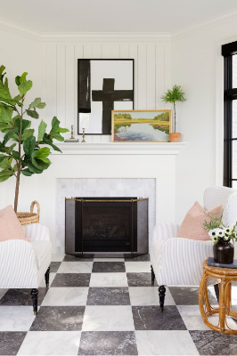

Our designers work with your style and budget—taking the guess work o ut of decorating.You’ll share your style and inspiration with your designer. Together, we’ll gather ideas, figure out what colours and concepts, layouts and lighting, fabric and furniture makes you happiest, and edit down inspiration to create a scheme that’s your very own versio.
What goes around comes around — especially when it comes to home decor trends. "One thing we're starting to see is more of a nod to vintage and traditional detailing — things like spooled legs, spindles, and other things we saw in furnishings from the 1800s and early 1900s," says interior designer Bria Hammel, CEO of Bria Hammel Interiors. But don't expect to see all vintage everywhere. This time around, designers are incorporating just one or two statement pieces.
High-contrast designs are currently having a moment — which means if you've always wanted to paint your home black, now is the time to give it a whirl (in moderation, of course). "For a long time, it was white, white, white," Hammel says. "But now, for example, maybe we'd see a chair with black fabric and a white frame. Or a console table in a dark stained wood with light-colored hardware."
If there was one defining design trend of the 2010s, it was the all-white kitchen. But in 2020, designers predict there'll be a shift toward spaces that go beyond just white. For example, Hammel expects to see more natural wood cabinets, islands, and shelves — all of which allow homeowners to keep a bright and airy vibe without restricting themselves to all-white-everything.